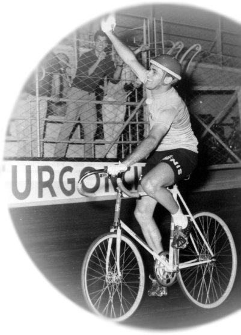

La speranza è il combustibile che spinge avanti la pesante macchina della nostra vita… e l’unico modo per superare una prova è affrontarla, questo è inevitabile. Domenico De Lillo

Sono Domenico De Lillo, classe 1937, milanese di nascita e chiassino d’adozione. Per dieci anni ho corso nei velodromi d’Europa nel mezzofondo dietro motori, vincendo sei titoli italiani professionisti e salendo tre volte sul podio mondiale. Poi ho continuato la mia avventura come allenatore di campioni del mondo e direttore sportivo della Gewiss-Bianchi.
Questo sito raccoglie foto e ricordi di una vita sulle due ruote.